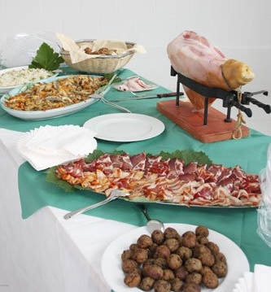

ACM-ICPC World Finals 2015 · Problem C

Paul owns a catering company and business is booming. The company has k catering teams, each in charge of one set of catering equipment. Every week, the company accepts n catering requests for various events. For every request, they send a catering team with their equipment to the event location. The team delivers the food, sets up the equipment, and instructs the host on how to use the equipment and serve the food. After the event, the host is responsible for returning the equipment back to Paul’s company.
Unfortunately, in some weeks the number of catering teams is less than the number of requests, so some teams may have to be used for more than one event. In these cases, the company cannot wait for the host to return the equipment and must keep the team on-site to move the equipment to another location. The company has an accurate estimate of the cost to move a set of equipment from any location to any other location. Given these costs, Paul wants to prepare an Advance Catering Map to service the requests while minimizing the total moving cost of equipment (including the cost of the first move), even if that means not using all the available teams. Paul needs your help to write a program to accomplish this task. The requests are sorted in ascending order of their event times and they are chosen in such a way that for any i < j, there is enough time to transport the equipment used in the ith request to the location of the jth request.
The first line of input contains two integers n (1 ≤ n ≤ 100) and k (1 ≤ k ≤ 100) which are the number of requests and the number of catering teams, respectively. Following that are n lines, where the ith line contains n − i + 1 integers between 0 and 1 000 000 inclusive. The jth number in the ith line is the cost of moving a set of equipment from location i to location i + j. The company is at location 1 and the n requests are at locations 2 to n + 1.
Display the minimum moving cost to service all requests. (This amount does not include the cost of moving the equipment back to the catering company.)
3 2 40 30 40 50 10 50
80
3 2 10 10 10 20 21 21
40